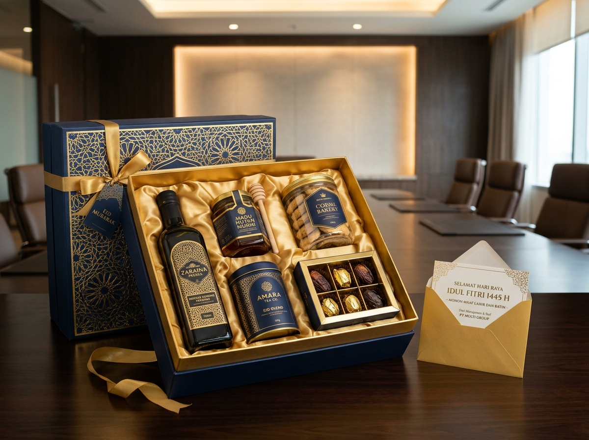

Bagi divisi HRD (Human Resources) dan Procurement, memilih bingkisan Lebaran untuk karyawan bukan sekadar rutinitas tahunan. Paket sembako adalah jembatan perhatian emosional antara manajemen dan seluruh jajaran staf, yang berdampak positif pada loyalitas dan motivasi kerja tim.
Mengapa Perusahaan Memilih Paket Sembako Lebaran untuk Karyawan?
Paket sembako Lebaran menjadi pilihan favorit korporasi karena isinya dapat digunakan langsung untuk kebutuhan dapur rumah tangga karyawan dalam menyongsong Idulfitri.
Dalam kegiatan corporate gifting, perusahaan tidak hanya mempertimbangkan kemewahan tampilan hadiah, tetapi juga asas kebermanfaatan dan efisiensi anggaran. Parcel sembako menawarkan sejumlah keunggulan strategis:
- Memberikan Manfaat Nyata: Beras, minyak goreng, gula, dan mentega langsung dinikmati oleh seluruh anggota keluarga karyawan di rumah.
- Keseragaman Paket: Spesifikasi produk yang sama persis menciptakan rasa keadilan dan kesetaraan di antara para pegawai.
- Fleksibilitas Pagu Anggaran: Instansi bebas menentukan opsi hemat, lengkap, hingga premium menyesuaikan kemampuan kas operasional perusahaan.
- Meningkatkan Employee Engagement: Bentuk perhatian tulus dari jajaran manajemen yang memperkuat keharmonisan iklim kerja.
Untuk gambaran konsep dan inspirasi kombinasi produk, silakan pelajari 10 ide isi parcel sembako Lebaran dan artikel pilar parcel Lebaran sembako.
Apa Saja Isi Paket Sembako Lebaran untuk Karyawan?
Paket sembako karyawan sebaiknya memprioritaskan kebutuhan pokok sehari-hari yang dikombinasikan dengan makanan manis pendamping khas Idulfitri. Berikut tiga tier opsi yang lazim diterapkan:
1. Paket Ekonomis (Budget Friendly)
Cocok untuk perusahaan manufaktur, pabrik, atau instansi dengan jumlah tenaga kerja massal (ratusan hingga ribuan staf):
- Minyak goreng pouch 500 ml s.d. 1 liter
- Gula pasir 500 gram
- Teh celup isi 25 sachet
- 3 bungkus mi instan
- 1 kaleng wafer atau biskuit renyah
- Tas spunbond tebal bertema Idulfitri
2. Paket Lengkap (Standard Corporate)
Pilihan paling populer bagi perusahaan perkantoran, perbankan, dan instansi swasta:
- Beras premium 3 kg s.d. 5 kg
- Minyak goreng kemasan botol 2 liter
- Gula pasir putih 1 kg
- Tepung terigu serbaguna 1 kg
- Mentega kaleng & susu kental manis
- 1 botol sirup rasa favorit keluarga
- Wadah kardus jinjing tebal dengan desain eksklusif
3. Paket Premium (Executive & Management)
Dikhususkan bagi jajaran manajerial, staf teladan, atau mitra rekanan B2B yang menginginkan sentuhan istimewa. Anda dapat memadukannya dengan katalog parcel korporat:
- Beras organik pandan wangi 5 kg
- Minyak goreng kemasan botol kualitas super
- Madu murni alami botol bersegel
- Teh artisan atau kopi arabika pilihan
- 1 botol sirup premium
- 1 toples nastar wisman mewah
- Hardbox elegan berbalut logo perusahaan

Bagaimana Cara Mengatur Anggaran Pengadaan Parcel Perusahaan?
Pengadaan korporat menuntut akurasi anggaran yang ketat agar tidak terjadi defisit di tengah jalan. Langkah penganggaran yang disarankan:
- Rekapitulasi Data Karyawan: Pastikan headcount staf aktif dan tambahkan buffer 2–3% untuk staf magang atau staf baru.
- Tetapkan Budget Plafon per Pax: Konsultasikan dengan pihak finance untuk menentukan anggaran bersih per orang (misalnya Rp150.000 / pax). Cek perbandingan biaya di panduan harga parcel sembako.
- Pisahkan Komponen Pajak & Ongkos Kirim: Pastikan Anda mengetahui apakah penawaran vendor sudah mencakup PPN/PPH dan biaya pengangkutan armada ke kantor pusat maupun cabang.
- Siapkan Termin Pembayaran: Sesuaikan skema DP (Down Payment) dan pelunasan invoice dengan ketentuan SOP keuangan perusahaan Anda.
Apakah Paket Sembako Lebaran Bisa Menggunakan Branding Perusahaan?
Tentu saja bisa. Layanan parcel custom corporate memungkinkan instansi mencantumkan identitas visual perusahaan secara proporsional:
- Kartu Ucapan Resmi: Menampilkan logo perusahaan, nama direktur utama, serta untaian doa dan selamat Hari Raya Idulfitri.
- Custom Sleeve Packaging: Sabuk kemasan kertas art paper tebal full color yang melingkari kardus parcel.
- Pita Sablon Printing: Pita kain satin dengan cetakan nama atau tagline perusahaan.
- Stiker Hangtag: Label gantungan minimalis yang memberikan kesan personal dan mewah.
Bagaimana Memilih Vendor Parcel Sembako untuk Perusahaan?
Menangani pesanan korporat berbeda dengan pesanan eceran perorangan. Pilihlah vendor parcel Lebaran profesional yang memenuhi kriteria berikut:
- Legalitas dan Dokumen Penagihan: Mampu menerbitkan Surat Penawaran Resmi, Invoice, Kwitansi Bermaterai, dan Faktur Pajak.
- Kapasitas Produksi Teruji: Mampu merakit ratusan hingga ribuan box dalam waktu singkat tanpa menurunkan standar kerapian.
- Jaminan Kualitas Barang: Merek produk pangan terdaftar BPOM resmi, kemasan tidak penyok, dan masa kedaluwarsa panjang.
- Ketersediaan Sampel Fisik: Menyediakan mockup fisik sebelum pesanan massal mulai dirakit di workshop.
- Ketepatan Waktu Distribusi: Memiliki armada kurir mobil ber-AC atau jaringan ekspedisi logistik terpercaya.
Bagaimana Proses Pemesanan Parcel Sembako Perusahaan?
Alur pengadaan corporate gifting yang ideal meliputi tahapan sistematis:
- Konsultasi Awal: Menyampaikan estimasi kuantiti, pagu budget, dan target tanggal kirim.
- Pengajuan Proposal & Sampel: Vendor mengirimkan rincian item, foto portofolio, dan sampel fisik ke kantor Anda.
- Approval Manajemen & PO: Penerbitan Purchase Order (PO) resmi dari instansi pemesan.
- Masa Produksi & Quality Control: Vendor merakit parcel sesuai SOP higienis dan menyortir barang cacat.
- Pengiriman & Berita Acara: Paket dikirimkan tepat waktu disertai Berita Acara Serah Terima (BAST).
Bagaimana Menjaga Keamanan Parcel Saat Dikirim ke Karyawan?
Jika perusahaan menerapkan sistem kerja jarak jauh (work from home) dan paket sembako dikirimkan langsung ke alamat rumah masing-masing staf:
- Gunakan kardus tebal double-wall corrugated yang mampu menahan beban tumpukan.
- Lapisi botol sirup kaca atau toples madu dengan air cushion bubble wrap tebal.
- Beri label stiker penanganan khusus agar kurir ekspedisi tidak membanting paket.
- Manfaatkan pengiriman multi-alamat terkoordinasi dengan nomor resi pelacakan online.
Apa Kesalahan yang Sering Terjadi dalam Pengadaan Parcel Perusahaan?
- Memesan Terlalu Dekat Hari H: Memesan pada H-7 Lebaran sering kali berhadapan dengan stok kemasan habis dan keterbatasan armada logistik.
- Hanya Membandingkan Harga Mentah: Penawaran murah yang tidak memperhitungkan biaya packing outer box dan ongkir sering kali memicu anggaran membengkak di akhir.
- Tidak Memeriksa Kondisi Sampel: Tidak mengecek fisik sampel berisiko menerima paket dengan susunan berantakan dan merek komoditas yang tidak sesuai harapan.
Pertanyaan Seputar Paket Sembako Lebaran untuk Karyawan
Paket umumnya berisi beras premium, minyak goreng, gula pasir, tepung terigu, sirup manis, teh celup, susu kental manis, dan biskuit kaleng yang sangat dibutuhkan keluarga karyawan saat Idulfitri.
Sangat bisa. Kami berpengalaman menangani pesanan korporat mulai dari puluhan hingga ribuan paket dengan jaminan mutu produk seragam dan jadwal kirim tepat waktu.
Ya. Logo instansi dapat disematkan pada kartu ucapan khusus, custom sleeve packaging, pita sablon, maupun stiker luar kemasan.
Idealnya pada H-30 hingga H-45 sebelum Idulfitri agar ada waktu cukup untuk approval penawaran, perakitan massal, dan distribusi sebelum libur cuti bersama perbankan dimulai.
Kesimpulan
Paket sembako Lebaran untuk karyawan merupakan bentuk nyata kepedulian perusahaan yang menyatukan tradisi silaturahmi dengan kebutuhan esensial keluarga staf. Melalui perencanaan matang, penentuan komposisi yang tepat, dan kerja sama dengan vendor terpercaya, bingkisan Idulfitri instansi Anda akan tersampaikan dengan sukses dan penuh kebanggaan.
Pelajari panduan induknya di Parcel Lebaran Sembako Lengkap serta analisis biaya di Harga Parcel Sembako Lebaran untuk menentukan pilihan paket terbaik bagi perusahaan Anda.
Rencanakan Pengadaan Parcel Sembako Perusahaan Anda Hari Ini
Dapatkan proposal pengadaan resmi, sampel fisik gratis, dan harga khusus corporate b2b untuk instansi Anda.